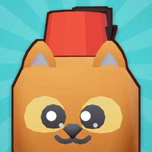

Privacy Policy
Bazaar Cats (iOS) · Effective: 2 November 2026 · Türkçe
In short: Bazaar Cats has no accounts and no servers of its own. Your game progress is saved only on your device. To show optional rewarded ads and to process in-app purchases, the game uses Google AdMob and RevenueCat, which receive limited device and usage data as described below.
1. Who we are
Bazaar Cats is an independent mobile game developed by Yağız Ergil ("we", "us"). Contact: yagizergil@gmail.com.
2. Data stored on your device
Your game save (progress, items, settings, language choice) is stored locally on your device. We do not upload it anywhere and cannot access it. Deleting the app deletes this data.
3. Advertising – Google AdMob
The game shows rewarded video ads only when you choose to watch one for an in-game reward. These ads are served by Google AdMob. Google may collect:
- device identifiers, including the Apple advertising identifier (IDFA) only if you allow tracking in the iOS App Tracking Transparency prompt;
- IP address (used to estimate approximate location), device model, OS version, language and app information;
- ad interactions (views, clicks) and diagnostic data.
This data is used to deliver, measure and, where you consent, personalise ads, and to prevent fraud. If you deny tracking or decline personalised ads, you will see non-personalised ads. See How Google uses information from sites or apps that use its services and the Google Privacy Policy.
Consent (EEA, UK, Switzerland)
Where required by law, the game shows Google's consent form (User Messaging Platform) before any ad is requested. You can change your choice at any time in Settings → Privacy options inside the game.
4. In-app purchases – Apple and RevenueCat
Payments are processed by Apple; we never see your payment details. To validate purchases and deliver what you bought, the game uses RevenueCat, which receives an anonymous app user ID generated on your device, your purchase and transaction history for this app, the App Store country and basic device information. See the RevenueCat Privacy Policy.
5. Notifications
If you allow notifications, reminders are scheduled locally on your device (for example, when cash has piled up or an event starts). No push server is used and no data is sent to us. You can turn notifications off in iOS Settings.
6. What we do not do
- We do not run our own analytics, accounts or servers.
- We do not sell your personal data.
- We do not knowingly collect personal information from children under 13 (or the applicable age in your country). The game is not directed at children. If you believe a child has provided data through the services above, contact us and we will help remove it.
7. Your rights
Depending on where you live (for example under the GDPR, UK GDPR, KVKK or CCPA), you may have rights to access, delete or object to the processing of your data. Because we hold no data on our own servers, most requests are handled by deleting the app, changing your ad and tracking choices, or contacting Google and RevenueCat directly. You can also write to us and we will help.
8. Changes
We may update this policy; the effective date above will change. Significant changes will be noted in the app's release notes.
Gizlilik Politikası
Bazaar Cats (iOS) · Yürürlük: 2 Kasım 2026
Kısaca: Bazaar Cats'te hesap yok ve oyunun kendi sunucusu yok. Oyun ilerlemen yalnızca cihazında saklanır. İsteğe bağlı ödüllü reklamları göstermek ve uygulama içi satın almaları işlemek için oyun Google AdMob ve RevenueCat kullanır; bu hizmetler aşağıda anlatılan sınırlı cihaz ve kullanım verisini alır.
1. Biz kimiz
Bazaar Cats, Yağız Ergil tarafından geliştirilen bağımsız bir mobil oyundur. İletişim: yagizergil@gmail.com.
2. Cihazında saklanan veriler
Oyun kaydın (ilerleme, eşyalar, ayarlar, dil seçimi) yalnızca cihazında saklanır. Hiçbir yere yüklenmez ve biz erişemeyiz. Uygulamayı silmek bu veriyi de siler.
3. Reklam: Google AdMob
Oyun, yalnızca sen bir oyun içi ödül için izlemeyi seçtiğinde ödüllü video reklam gösterir. Reklamları Google AdMob sunar. Google şunları toplayabilir:
- cihaz tanımlayıcıları; Apple reklam kimliği (IDFA) yalnızca iOS takip izni penceresinde izin verirsen;
- IP adresi (yaklaşık konum tahmini için), cihaz modeli, işletim sistemi sürümü, dil ve uygulama bilgileri;
- reklam etkileşimleri (görüntüleme, tıklama) ve tanılama verileri.
Bu veriler reklamları sunmak, ölçmek, izin verdiysen kişiselleştirmek ve dolandırıcılığı önlemek için kullanılır. Takibe izin vermez ya da kişiselleştirilmiş reklamı reddedersen kişiselleştirilmemiş reklam görürsün. Ayrıntı: Google'ın, hizmetlerini kullanan uygulamalardan gelen bilgileri nasıl kullandığı ve Google Gizlilik Politikası.
Onay (AEA, Birleşik Krallık, İsviçre)
Yasanın gerektirdiği yerlerde, herhangi bir reklam istenmeden önce Google'ın onay formu (User Messaging Platform) gösterilir. Seçimini istediğin zaman oyunda Ayarlar → Gizlilik seçenekleri bölümünden değiştirebilirsin.
4. Uygulama içi satın almalar: Apple ve RevenueCat
Ödemeleri Apple işler; ödeme bilgilerini biz hiçbir zaman görmeyiz. Satın almaları doğrulamak ve aldığını teslim etmek için oyun RevenueCat kullanır. RevenueCat; cihazında oluşturulan anonim bir kullanıcı kimliğini, bu uygulamadaki satın alma ve işlem geçmişini, App Store ülkesini ve temel cihaz bilgisini alır. Ayrıntı: RevenueCat Gizlilik Politikası.
5. Bildirimler
Bildirimlere izin verirsen hatırlatmalar cihazında yerel olarak zamanlanır (örneğin kasada para biriktiğinde ya da bir etkinlik başladığında). Push sunucusu kullanılmaz ve bize veri gönderilmez. Bildirimleri iOS Ayarları'ndan kapatabilirsin.
6. Yapmadıklarımız
- Kendi analitik sistemimiz, hesaplarımız ya da sunucumuz yok.
- Kişisel verilerini satmayız.
- 13 yaşından (ya da ülkendeki yasal yaştan) küçük çocuklardan bilerek kişisel bilgi toplamayız. Oyun çocuklara yönelik değildir. Bir çocuğun yukarıdaki hizmetler aracılığıyla veri paylaştığını düşünüyorsan bize yaz, silinmesine yardım edelim.
7. Hakların
Yaşadığın yere göre (örneğin KVKK, GDPR, UK GDPR veya CCPA kapsamında) verilerine erişme, silinmesini isteme ya da işlenmesine itiraz etme hakların olabilir. Kendi sunucularımızda veri tutmadığımız için çoğu talep uygulamayı silerek, reklam ve takip seçimlerini değiştirerek ya da doğrudan Google ve RevenueCat'e başvurarak karşılanır. Bize de yazabilirsin, yardımcı oluruz.
8. Değişiklikler
Bu politikayı güncelleyebiliriz; yukarıdaki yürürlük tarihi değişir. Önemli değişiklikler uygulamanın sürüm notlarında belirtilir.